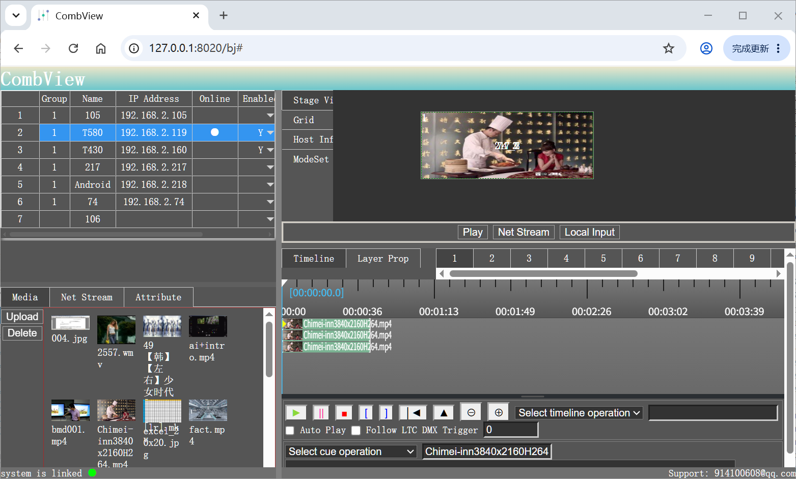

Professional Web-based display control software for multi-projector systems and video walls.

Our Combview Software provides comprehensive display control capabilities for multi-projector systems. It integrates uvMapp auto geometry correction, 3D mapping, and video wall processing into a single unified platform.
This Web-based software solution is designed for professional technicians and system integrators who need a powerful yet intuitive tool to manage complex display systems.
Comprehensive media playback and management.
Advanced timeline control tools, support pause, resume, and seek.
Network video streaming(RTSP,RTMP) Decoding and show on layer.
Flexible deployment on PC Windows platform or ARM-based Android platform.
Flexible screen layout configuration, support projector, LCD, and LED Walls. Support multiple groups of Combination displays.
| Supported Projectors | DLP, LCD, LCoS projectors |
|---|---|
| Maximum Output | Unlimited display channels |
| Resolution | Up to 8K per display channel |
| Media Formats | MP4, MOV, AVI, WMV, MKV, etc. |
| Input Sources | Video, Picture, RTSP, RTMP, and Remote Windows Desktop |
| Network | LAN, WAN, TCP/IP |
| Operating System | Can be deployed on Windows 10/11 (64-bit) or Android (ARM) based TV box |
| Trigger and Synchronizing | Support trigger and synchronizing by external LTC timecode signal, or Dmx512 Artnet signal, by rs232 or udp control commands. |
Experience professional display control software for your multi-display systems.
Contact Sales Download Trial View Documentation